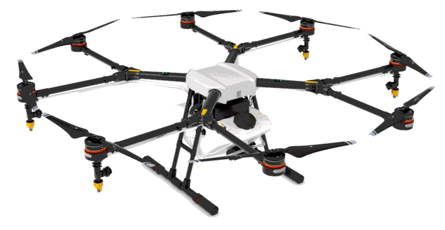
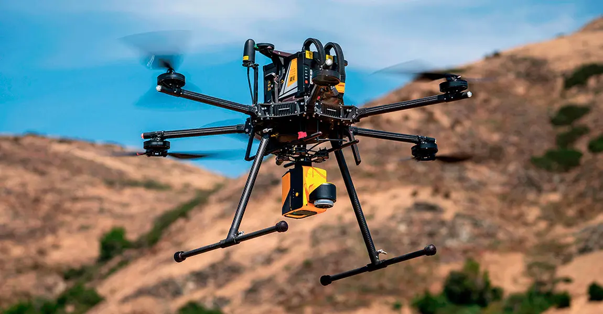

En ğ““ğ“¢ğ“´ğ”‚ğ“Ÿğ“»ğ“¸ğ“ğ“¾ğ“¬ğ“½ğ“²ğ“¸ğ“·ğ“¼ somos especialistas en múltiples tareas que finalizarán
en una
combinación única y
excepcional
para tu marca.
Somos una productora audiovisual, creativa e innovadora, siempre a la vanguardia con el equipo
más actual del mercado para que tu proyecto tenga la mejor calidad profesional.
Somos especialistas en diversas tareas que se combinan en una mezcla única y especial para tu marca.
Dá el paso hacia la innovación que tu proyecto necesita
UN EQUIPO ENTREGADO
En ğ““ğ“¢ğ“´ğ”‚ğ“Ÿğ“»ğ“¸ğ“ğ“¾ğ“¬ğ“½ğ“²ğ“¸ğ“·ğ“¼ contamos con el mejor equipo tecnológico y profesional
para ofrecer unos resultados sorprendentes a tu empresa.
Contamos con un equipo de ingenieros, diseñadores, productores audiovisuales, fotógrafos profesionales y
asesores de marketing para proponerte las opciones que mejor se adapten a tu proyecto .
Contamos con el mejor equipo de profesionales, formados en diferentes áreas para conseguir los mejores
resultados
Nuestros proyectos abarcan desde grandes cadenas de hoteles, eventos, industria, agricultura, hasta
pequeños
negocios a pie de calle y trabajos personalizados.
Adaptamos nuestros servicios para cumplir con las necesidades exactas de
cada
cliente.
Calidad Inigualable
Utilizamos drones y cámaras profesionales de última generación para capturar
imágenes y videos de alta definición.
Experiencia y Profesionalidad
Contamos con un equipo de expertos certificados, desde pilotos de
drones hasta fotógrafos y editores.
TECNOLOGÍA REVOLUCIONARIA

Cumplimiento Normativo
Operamos bajo las regulaciones de EASA y ENAIRE DRONES.
Innovación Constante
Invertimos continuamente en las últimas tecnologÍas.
Compromiso con la Sostenibilidad
Operamos con polÍticas de sostenibilidad.
Seguimiento Post-Servicio
Realizamos un seguimiento para asegurarnos de la satisfacción del
cliente.
📽 𝐒𝐄𝐑𝐕𝐈𝐂𝐈𝐎𝐒
En ğ““ğ“¢ğ“´ğ”‚ğ“Ÿğ“»ğ“¸ğ“ğ“¾ğ“¬ğ“½ğ“²ğ“¸ğ“·ğ“¼ ofrecemos soluciones audiovisuales personalizadas que se
adaptan a tus necesidades
Desde la planificación inicial hasta la entrega final, nos encargamos de cada detalle para asegurar
resultados
excepcionales en cada proyecto.
Utilizamos drones de última generación y equipos profesionales para
capturar
imágenes y videos de alta calidad, cumpliendo siempre con la normativa vigente.
Disponemos de Drones con TecnologÍa LIDAR capaces de realizar estudios cartográficos al
detalle.

TecnologÍa LiDAR
El LiDAR (Light Imaging Detection and Ranging o Laser Imaging Detection and Ranging) funciona
emitiendo pulsos láser y midiendo con precisión el tiempo que tardan estos pulsos en regresar tras
interactuar con las superficies. Este principio constituye la base de la capacidad de LiDAR para
construir mapas tridimensionales del entorno. Al aprovechar esta medición, los sistemas LiDAR pueden
determinar distancias con precisión, lo que los convierte en fundamentales para tareas como la detección
de objetos, el análisis espacial y el modelado del terreno.
Los drones con sensores LiDAR se adaptan a multitud de aplicaciones, ya sea para supervisar
obras de construcción, evaluar paisajes agrÍcolas o realizar estudios arqueológicos. Su versatilidad
aumenta la eficacia y el alcance de estos proyectos.
Permiten obtener una nube de puntos del terreno tomándolos mediante un escáner láser aerotransportado
(airborne light scanner, ALS). Para realizar este escaneado se combinan dos movimientos. Uno
longitudinal dado por la trayectoria del dron y otro transversal mediante un espejo móvil que desvÍa el
haz de luz láser emitido por el escáner.
Para conocer las coordenadas de la nube de puntos se necesita la posición del sensor y el ángulo del
espejo en cada momento. Para ello el sistema se apoya en un sistema GPS diferencial y un sistema
de navegación inercial (INS). Conocidos estos datos y la distancia sensor-terreno obtenida con el
distanciómetro obtenemos las coordenadas buscadas.
El resultado es de decenas de miles de puntos por segundo.